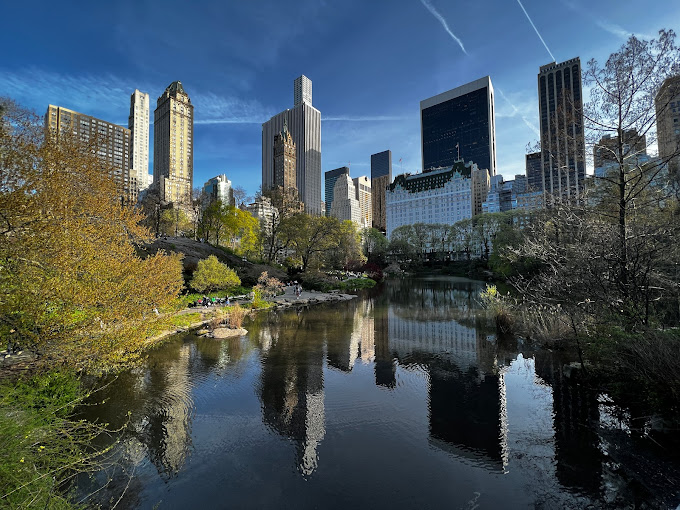

Photo by Randy Conolly
This Photo of Conservatory Pond in Central Park in New York City was taken on October 22, 2011 with a Canon EOS 30D camera.
Conservatory Pond in Central Park
By: Ricardo on September 15, 2015
Easy on HDR buddy
By: Susan on October 1, 2015
I love Central park